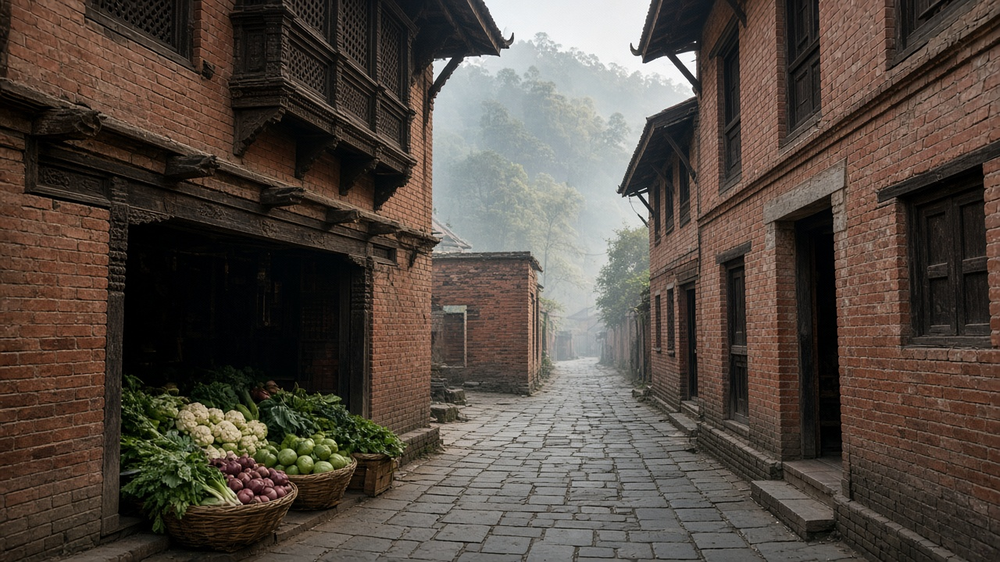
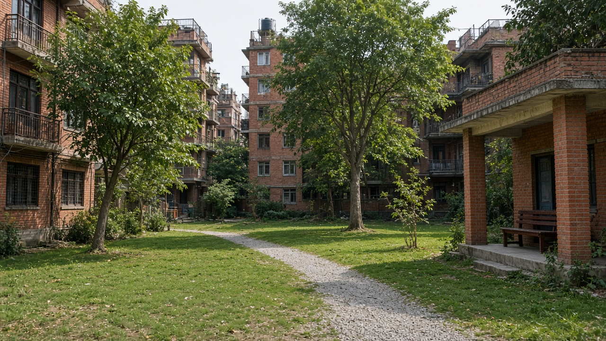
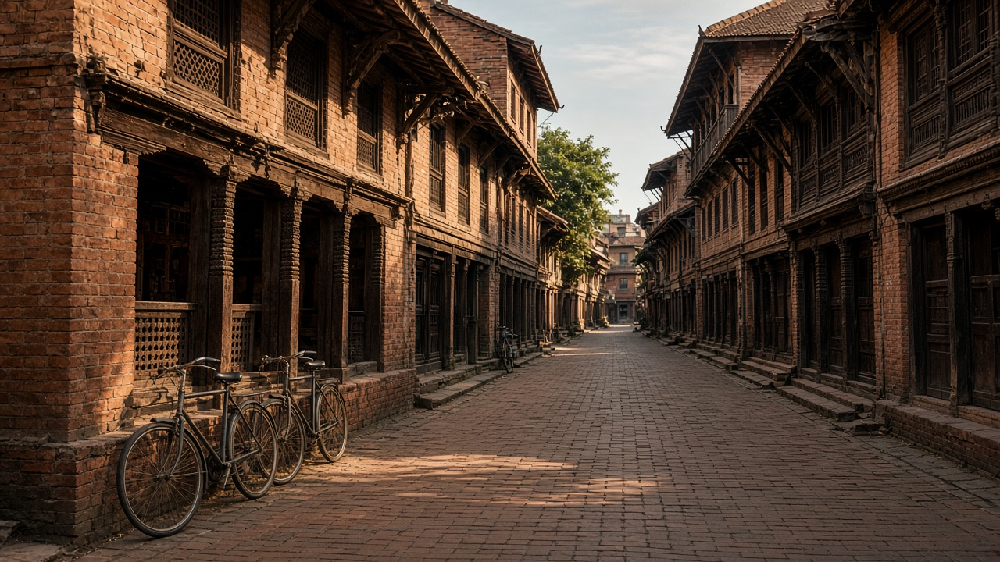

Fifteen-Minute Cities and Proximity Planning
Published on August 20, 2026

A fifteen-minute city arranges daily needs—schools, clinics, groceries, parks, work, and culture—so most trips can be made on foot or by bicycle within a quarter hour. Proximity planning is the method: map what each neighbourhood already has, fill gaps with mixed uses, and connect them with safe short streets rather than forcing every errand onto a highway. The idea is not a closed bubble. People still travel across town for specialised jobs; the point is that routine life should not require a motorcycle for bread, a playground, or a health post. Traditional Newar neighbourhoods and many hill bazaars already operated this way until parking and one-way schemes stretched distances.
Implementation is about services, not slogans. Planners locate primary schools and clinics first, then allow corner shops and workshops that zoning once banned. Timed street closures around schools, pocket parks on leftover lots, and frequent local buses extend the fifteen-minute radius for people who cannot walk far. Equity is the test: if only wealthy compounds enjoy nearby amenities while rental blocks sit beside empty warehouses, proximity has failed. Care work—childcare, elder visits, market queues—shapes women’s time; locating those services close to housing is a gender policy as much as a transport one. Digital maps of walking time by ward make gaps visible.
Kathmandu Valley can recover proximity by cooling traffic in historic cores and adding missing clinics and parks in new apartment belts. Pokhara and emerging municipalities can still cluster civic buildings instead of scattering them along bypasses. Critics fear restriction of movement; good proximity planning expands choice by making walking realistic, while longer trips remain available by public transport. Success is the share of households that can reach a school, clinic, park, and shop without a vehicle, and the drop in short motorcycle trips. A city of short distances gives time back to families and shrinks the land consumed by parking.

पन्ध्र मिनेटको शहरले दैनिक आवश्यकता—विद्यालय, क्लिनिक, किराना, पार्क, काम र संस्कृति—यसरी मिलाउँछ कि अधिकांश यात्रा पैदल वा साइकलमा सवा घण्टाभित्र सकियोस्। निकटता योजना विधि हो: प्रत्येक छिमेकमा के छ नक्सा गर्ने, मिश्रित प्रयोगले खाली ठाउँ भर्ने र सुरक्षित छोटा गल्लीले जोड्ने, प्रत्येक काम राजमार्गमा नधकेल्ने। विचार बन्द बुलबुला होइन। मानिस विशेष जागिरका लागि शहरपार जान्छन्; कुरा यो हो कि नियमित जीवनका लागि रोटी, खेल मैदान वा स्वास्थ्य चौकीमा मोटरसाइकल नचाहियोस्। परम्परागत नेवार छिमेक र धेरै पहाडी बजार यसरी चल्थे जबसम्म पार्किङ र एकतर्फी योजनाले दूरी तन्काएनन्।
कार्यान्वयन नारा होइन सेवाको कुरा हो। योजनाकारले प्राथमिक विद्यालय र क्लिनिक पहिले राख्छन्, अनि कुना पसल र कार्यशाला अनुमति दिन्छन् जुन क्षेत्र निर्धारणले एक समय निषेध गर्थ्यो। विद्यालय वरिपरि समयबद्ध सडक बन्द, बाँकी जग्गाका साना पार्क र बारम्बार स्थानीय बसले टाढा हिँड्न नसक्नेका लागि पन्ध्र मिनेट त्रिज्या बढाउँछन्। न्याय परीक्षा हो: धनी परिसरले मात्र नजिक सुविधा पाए र भाडा खण्ड खाली गोदाम छेउ बसे भने निकटता असफल भयो। हेरचाह काम—बच्चा स्याहार, वृद्ध भेट, बजार लाइन—महिलाको समय आकार दिन्छ; ती सेवा आवास नजिक राख्नु यातायात जत्तिकै लैङ्गिक नीति हो। वडाअनुसार पैदल समयका डिजिटल नक्सा खाली ठाउँ देखाउँछन्।
काठमाडौं उपत्यकाले ऐतिहासिक केन्द्रमा ट्राफिक चिस्याएर र नयाँ अपार्टमेन्ट पेटीमा हराएका क्लिनिक तथा पार्क थपेर निकटता फर्काउन सक्छ। पोखरा र उदाउँदो नगरले नागरिक भवन छेउबाटो छेउ छर्नुभन्दा थुपार्न अझै सक्छन्। आलोचक आवतजावत बन्देज डराउँछन्; राम्रो निकटता योजनाले पैदल यथार्थ बनाएर छनोट बढाउँछ भने लामो यात्रा सार्वजनिक यातायातबाट उपलब्ध रहन्छ। सफलता विद्यालय, क्लिनिक, पार्क र पसल सवारी बिना पुग्ने घरपरिवार हिस्सा र छोटा मोटरसाइकल यात्रा कमी हो। छोटो दूरीको शहरले परिवारलाई समय फर्काउँछ र पार्किङले खाने जमिन घटाउँछ।

पंद्रह मिनट का शहर दैनिक ज़रूरतें—विद्यालय, क्लिनिक, किराना, पार्क, काम और संस्कृति—ऐसे मिलाता है कि अधिकांश यात्रा पैदल या साइकिल से सवा घंटे में पूरी हो। निकटता योजना विधि है: हर मोहल्ले में क्या है नक्शा करना, मिश्रित उपयोग से खाली जगह भरना और सुरक्षित छोटी गलियों से जोड़ना, हर काम राजमार्ग पर न धकेलना। विचार बंद बुलबुला नहीं। लोग विशेष नौकरियों के लिए शहर पार जाते हैं; बात यह है कि नियमित जीवन के लिए रोटी, खेल मैदान या स्वास्थ्य चौकी पर मोटरसाइकिल न चाहिए। पारंपरिक नेवार मोहल्ले और कई पहाड़ी बाज़ार ऐसे चलते थे जब तक पार्किंग और एकतरफ़ा योजनाओं ने दूरी न खींची।
कार्यान्वयन नारा नहीं सेवा की बात है। योजनाकार प्राथमिक विद्यालय और क्लिनिक पहले रखते हैं, फिर कोने की दुकानें और कार्यशालाएँ अनुमति देते हैं जिन्हें क्षेत्र निर्धारण कभी रोकता था। विद्यालय इर्द-गिर्द समयबद्ध सड़क बंद, बची ज़मीन के छोटे पार्क और बार-बार स्थानीय बसें दूर चल न पाने वालों के लिए पंद्रह मिनट त्रिज्या बढ़ाती हैं। न्याय परीक्षा है: धनी परिसर ही पास सुविधा पाएँ और किराया खंड खाली गोदाम किनारे बैठें तो निकटता असफल हुई। देखभाल काम—बच्चे सँभालना, वृद्ध भेंट, बाज़ार कतार—महिलाओं का समय गढ़ता है; वे सेवाएँ आवास के पास रखना परिवहन जितनी ही लैंगिक नीति है। वार्ड अनुसार पैदल समय के डिजिटल नक्शे खाली जगह दिखाते हैं।
काठमांडू घाटी ऐतिहासिक केंद्रों में ट्रैफ़िक ठंडा कर और नए अपार्टमेंट पेटी में गायब क्लिनिक तथा पार्क जोड़कर निकटता लौटा सकती है। पोखरा और उभरते नगर नागरिक इमारतें छोर सड़क किनारे छितराने के बजाय अभी थुपेर सकते हैं। आलोचक आवागमन रोक से डरते हैं; अच्छी निकटता योजना पैदल यथार्थ बनाकर चयन बढ़ाती है जबकि लंबी यात्रा सार्वजनिक परिवहन से उपलब्ध रहती है। सफलता विद्यालय, क्लिनिक, पार्क और दुकान वाहन बिना पहुँचने वाले परिवार हिस्सेदारी और छोटी मोटरसाइकिल यात्रा कमी है। छोटी दूरी का शहर परिवारों को समय लौटाता है और पार्किंग द्वारा खाई ज़मीन घटाता है।